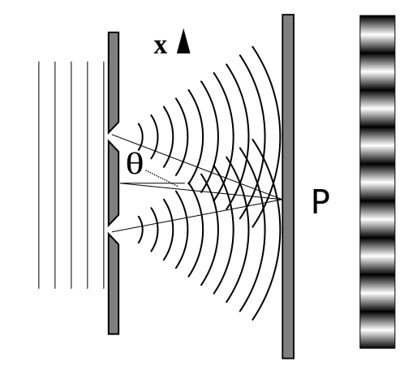

Thought experiments & key setups
Double-slit experiment
When particles like electrons pass through two narrow slits, they create an interference pattern typical of waves. But if you measure which slit they go through, the pattern vanishes.
Particle gun aimed at a plate with two slits; behind it a screen shows bright and dark fringes.
Schrödinger’s cat
A sealed box links a quantum event to a macroscopic outcome. Before opening the box, the cat is often said to be in a superposition of alive and not alive—illustrating measurement puzzles.
Short explainer video
The embedded video is external content. If it fails to load, visit the linked resource in a new tab.